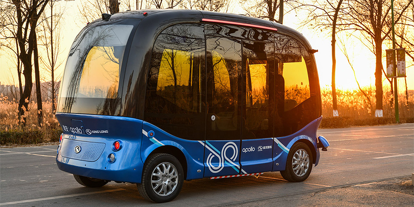
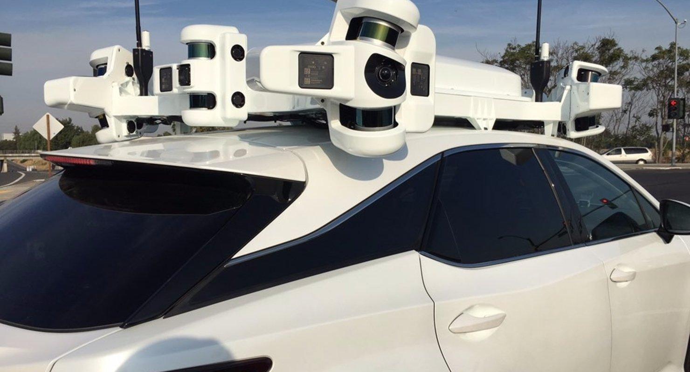

Что такое беспилотный автомобиль?
Беспилотный автомобиль - это обычный автомобиль, с множеством различных датчиков, который может, без участия человека, перевезти его из одной точки в другую.
Система работы беспилотного автомобиля

Для того, чтобы доставить пассажира в пункт назначения, беспилотный автомобиль должен: знать местность, уметь взаимодействовать с другими участниками дорожного движения (например, с машинами или людьми) и самое главное - соблюдать ПДД. Этим автомобиль обеспечивают следующие технологии:
- AI (исскусвенный интеллект)
- самая главная часть беспилотного автомобиля. Обрабатывает данные со всех остальных датчиков и приводит в действие автомобиль. Заменяет водителя.
- Радары
- эти датчики беспилотника определяет положение объектов сзади и спереди автомобиля и даже определяет расстояние до них. Позволяет ориентироваться в потоке.
- Lidar
- вращающийся датчик беспилотного автомобиля, который обнаруживает объекты на 360 градусов примерно на 60 метров.
- Камеры
- обеспечивает визуальное обнаружение объектов (например, дорожные знаки или разметку).
Илон Маск считает, что достаточно лишь одной камеры, т.к. человек справляется с 2-мя глазами, а техника должна быть лучше человекаНо в беспилотнике, к сожалению, нет места в багажнике. В нем расположены части AI.

Автономность (уровни)
- Level 0 — No Automation
- водитель контролирует всё (обычная машина).
- Level 1 — Driver Assistance
- автомобиль помогает управлять скоростью, немного помогает с рулением.
- Level 2 — Partial Automation
- беспилотник контролирует скорость и рулении, однако водитель должен следить за дорожной ситуацией и должен быть готов принять управление.
- Level 3 — Conditional Automation
- беспилотный автомобиль полностью управляет машиной, но может в любой момент передать управление водителю.
- Level 4 — High Automation
- автомобиль справляется с более сложными дорожными ситуациями, можно опустить руль
- Level 5 — Full Automation
- участие водителя не требуется, руль может отсутствовать. Беспилотный автомобиль справляется со всеми ситуациями сам.
Алгоритм работы
- С помощью лидара генерируется объемная карта местности;
- На основе показаний остальных датчиков, AI оценивает дорожную ситуацию;
- AI определяет траекторию движения беспилотного автомобиля и другие факторы (например, гололед или жесты полицейского).
Особенности беспилотного автомобиля
- Беспилотные автомобили не умеют ориентироваться на снегу. Исключением является университет MIT, где смогли сделать так, чтобы автомобиль ориентировался по снежному слепку дороги.
- Беспилтнику не подходят обычные карты и GPS, т.к. их погрешность до 10 метров, а автомобилю нужно понимать, где он находится с сантиметровой точностью.
- Один только Lidar стоит 500000 рублей, а их всего от 3 до 5.
На этом сайте статьи только про беспилотные автомобили компьютерных гигантов, на самом деле их гораздо больше. Фото некоторых из остальных - ниже